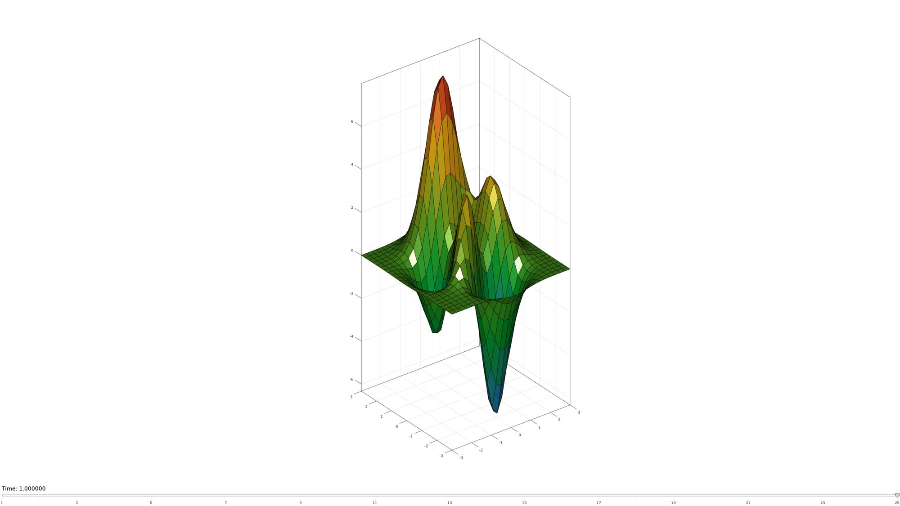
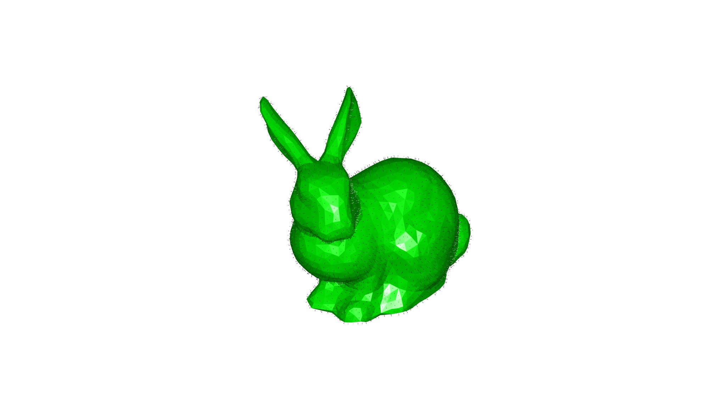
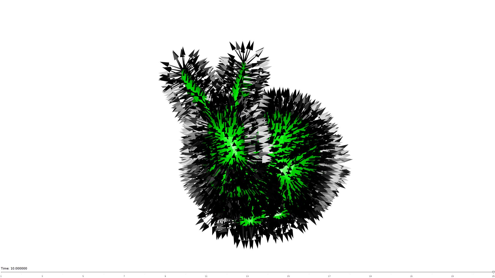
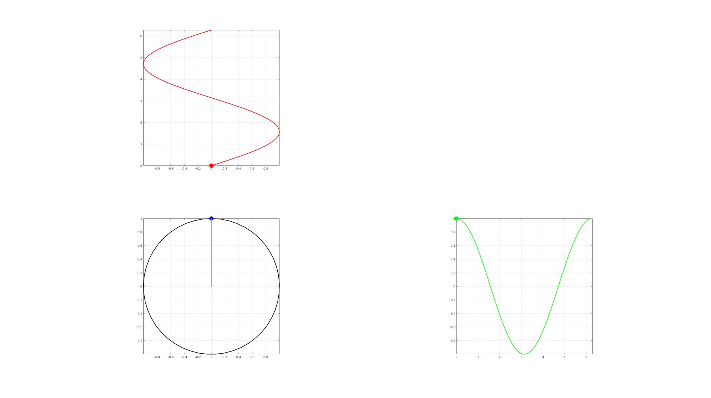
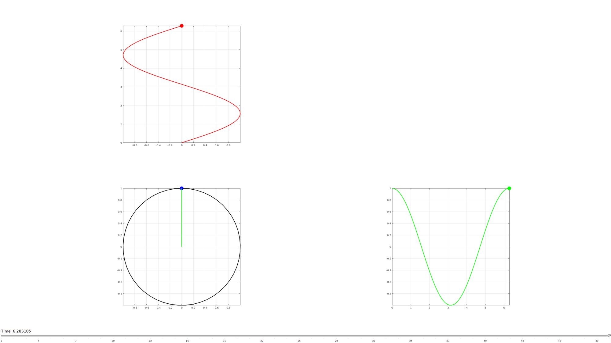
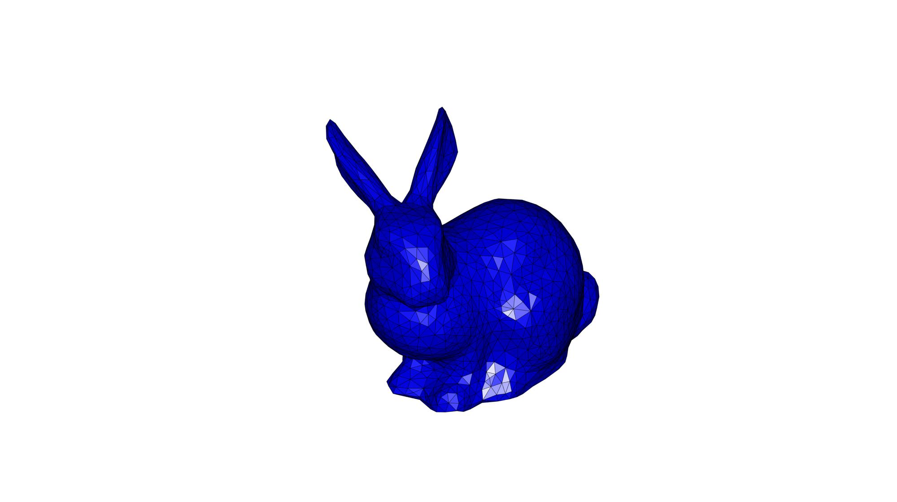
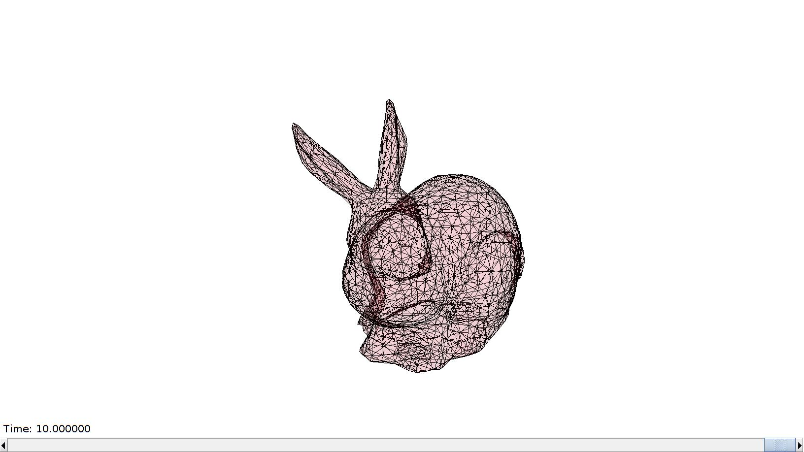

anim8
Below is a demonstration of the features of the anim8 function
Contents
- Syntax
- Description
- Examples
- Example 1a: Animating by adjusting a single graphics property, a surface rotation
- Example 1b: Animating by adjusting a single graphics property, surface vectors
- Example 2a: Animating multiple graphics features, points and curves
- Example 2b: Animating multiple graphics features, color changing, bouncing, rotating surface
- Loading a saved anim8 figure;
- Demo of the GUI
clear; close all; clc;
Syntax
hf=anim8(varargin);
Description
The anim8 function can be used to interactively animate graphics components. Anything about a figure and its content with a handle whose properties can be accessed/altered using MATLAB can be animated. This includes properties of graphics objects and view settings. To use anim8 create a figure window with features to animate (e.g. plots, surfaces, views, etc.). Next create a structure containing the object handles, object properties to alter, and the property values. The anim8 function takes in 0, 1, or 2 inputs. No input: Anim8 will assume you want to browse to a previously saved anim8 figure and reload it. 1 input: Anim8 will assume the input is a path to a previously saved anim8 figure to be reloaded. 2 inputs: Anim8 will assume the first input is the figure handle, and the second input the anim8 structure.
Examples
Example 1a: Animating by adjusting a single graphics property, a surface rotation
Creating example data, in this case a surface which will be rotated in the animation by adjusting the angular value of a view property of the axis.
[X,Y,Z]=peaks(25); %Some graphics data
Initiate a visualization in a figure window while storing an object handle, in this case an axis handle to manipulate a view.
hf=cFigure; surf(X,Y,Z); colormap(gjet(250)); view(3); axis equal; axis tight; axis vis3d; grid on; box on; camlight headlight; h_ax=gca; %Store handle for use in animation drawnow;

%Populate the animaStruct nSteps=25; %Number of animation steps %Create the time vector animStruct.Time=linspace(0,1,nSteps); %Create angles to set view a=linspace(h_ax.View(1),h_ax.View(1)+360,nSteps); for q=1:1:nSteps aNow=a(q); %The current angle %Set entries in animation structure animStruct.Handles{q}=h_ax; %Handles of objects to animate animStruct.Props{q}={'View'}; %Properties of objects to animate animStruct.Set{q}={[aNow h_ax.View(2)]}; %Property values for to set in order to animate end
Viewing the animation. By calling anim8 a GUI is created in the specified figure. An anim8 scrollbar and buttons appear to interact with the animation. There is a play/stop button, a timing adjustment button, a bounce button, and an export gif button. Press the questionmark button to get help on these buttons.
Start anim8 gui
anim8(hf,animStruct);
Example 1b: Animating by adjusting a single graphics property, surface vectors
In this example a surface model is visualized. The length of the face normal vectors is animated.
[F,V]=stanford_bunny; %Some graphics data
Initiate a visualization in a figure window while storing an object handle, in this case an axis handle to manipulate a view.
hf=cFigure; gpatch(F,V,'g','none'); hp=patchNormPlot(F,V,2); %The face normal patch view(3); axis equal; axis tight; axis vis3d; grid on; box on; camlight headlight; axis off; axis manual; ax=gca; ax.Clipping = 'off'; drawnow;
%Populate the animaStruct nSteps=25; %Number of animation steps %Create the time vector animStruct.Time=linspace(0,10,nSteps); %The vector lengths a=linspace(0,25,nSteps); [N,Vn]=patchNormal(F,V); %Face normals for q=1:1:nSteps aNow=a(q); %The current angle [Fni,Vni,~]=quiver3Dpatch(Vn(:,1),Vn(:,2),Vn(:,3),N(:,1),N(:,2),N(:,3),[],[aNow aNow]); %Set entries in animation structure animStruct.Handles{q}=hp; %Handles of objects to animate animStruct.Props{q}={'Vertices'}; %Properties of objects to animate animStruct.Set{q}={Vni}; %Property values for to set in order to animate end
Viewing the animation. By calling anim8 a GUI is created in the specified figure. An anim8 scrollbar and buttons appear to interact with the animation. There is a play/stop button, a timing adjustment button, a bounce button, and an export gif button. Press the questionmark button to get help on these buttons.
Start anim8 gui
anim8(hf,animStruct);
Example 2a: Animating multiple graphics features, points and curves
Creating example data, in this case a sine curve. A single point will be animated to move allong the curve.
nSteps=50; %Number of animation steps
t=linspace(0,2*pi,nSteps);
x=sin(t);
y=cos(t);
Initiate a visualization in a figure window while storing an object handle, in this case handles to plots of points and curves. A circle, a sine, and a cosine graph are shown and their relationships are animated.
hf=cFigure; subplot(2,2,1); hold on; plot(x,t,'r-','LineWidth',2); hp2=plot(x(1),t(1),'r.','MarkerSize',50); %Handle for object to adjust view(2); axis square; axis tight; grid on; box on; subplot(2,2,3); hold on; plot(x,y,'k-','LineWidth',2); hp1=plot(x(1),y(1),'b.','MarkerSize',50); %Handle for object to adjust hp4=plot([0 0],[0 y(1)],'g-','LineWidth',2); %Handle for object to adjust hp5=plot([0 0],[x(1) 0],'r-','LineWidth',2); %Handle for object to adjust view(2); axis square; axis tight; grid on; box on; subplot(2,2,4); hold on; plot(t,y,'g-','LineWidth',2); hp3=plot(t(1),y(1),'g.','MarkerSize',50); %Handle for object to adjust view(2); axis square; axis tight; grid on; box on; drawnow;
%Populate the animaStruct %Create the time vector animStruct.Time=linspace(0,2*pi,nSteps); for q=1:1:nSteps tNow=t(q); %The current t xNow=x(q); %The current x yNow=y(q); %The current y %Set entries in animation structure animStruct.Handles{q}=[hp1,hp1,hp2,hp2,hp3,hp3,hp4,hp5]; %Handles of objects to animate animStruct.Props{q}={'XData','YData','XData','YData','XData','YData','YData','XData'}; %Properties of objects to animate animStruct.Set{q}={xNow,yNow,xNow,tNow,tNow,yNow,[0 yNow],[xNow 0]}; %Property values for to set in order to animate end
Viewing the animation. By calling anim8 a GUI is created in the specified figure. An anim8 scrollbar and buttons appear to interact with the animation. There is a play/stop button, a timing adjustment button, a bounce button, and an export gif button. Press the questionmark button to get help on these buttons.
Start anim8 gui
anim8(hf,animStruct);
Example 2b: Animating multiple graphics features, color changing, bouncing, rotating surface
In this example a surface model is visualized. The coordinates, color, and transparancy of the surface model are adjusted as a function of the time steps.
[F,V]=stanford_bunny; %Some graphics data
Initiate a visualization in a figure window while storing an object handle, in this case the handle to patch graphics.
hf=cFigure; hp=gpatch(F,V,'b'); view(3); axis equal; axis tight; axis vis3d; grid on; box on; camlight headlight; axis off; axis manual; ax=gca; ax.Clipping = 'off'; drawnow;
%Populate the animaStruct nSteps=25; %Number of animation steps animStruct.Time=linspace(0,10,nSteps); %Time vector %Other elements required for this animation R=euler2DCM([0 0 (2*pi)/nSteps]); %Rotation tensor, the same for each step a=(max(V(:,3))-min(V(:,3)))/2; %Amplitude for translation c=gjet(nSteps); %RGB color array for color variation faceAlphaLevels=linspace(1,0.1,nSteps); for q=1:1:nSteps %Rotation if q>1 V=V*R; end %Up-down translation Vp=V; %Get rotated version Vp(:,3)=Vp(:,3)+a/2*sin(2*pi*(animStruct.Time(q)/max(animStruct.Time))); %Add offset %Color cNow=c(q,:); %Current color %Transparency alphaNow=faceAlphaLevels(q); %Set entries in animation structure animStruct.Handles{q}=[hp,hp,hp]; %Handles of objects to animate animStruct.Props{q}={'FaceColor','Vertices','FaceAlpha'}; %Properties of objects to animate animStruct.Set{q}={cNow,Vp,alphaNow}; %Property values for to set in order to animate end
Start anim8 gui
anim8(hf,animStruct);
Loading a saved anim8 figure;
loadPath=fullfile(fileparts(fileparts(mfilename('fullpath'))),'data','fig'); loadName=fullfile(loadPath,'exampleSavedAnim8Figure.fig'); anim8(loadName);
Demo of the GUI


GIBBON www.gibboncode.org
Kevin Mattheus Moerman, gibbon.toolbox@gmail.com
GIBBON footer text
License: https://github.com/gibbonCode/GIBBON/blob/master/LICENSE
GIBBON: The Geometry and Image-based Bioengineering add-On. A toolbox for image segmentation, image-based modeling, meshing, and finite element analysis.
Copyright (C) 2006-2021 Kevin Mattheus Moerman and the GIBBON contributors
This program is free software: you can redistribute it and/or modify it under the terms of the GNU General Public License as published by the Free Software Foundation, either version 3 of the License, or (at your option) any later version.
This program is distributed in the hope that it will be useful, but WITHOUT ANY WARRANTY; without even the implied warranty of MERCHANTABILITY or FITNESS FOR A PARTICULAR PURPOSE. See the GNU General Public License for more details.
You should have received a copy of the GNU General Public License along with this program. If not, see http://www.gnu.org/licenses/.